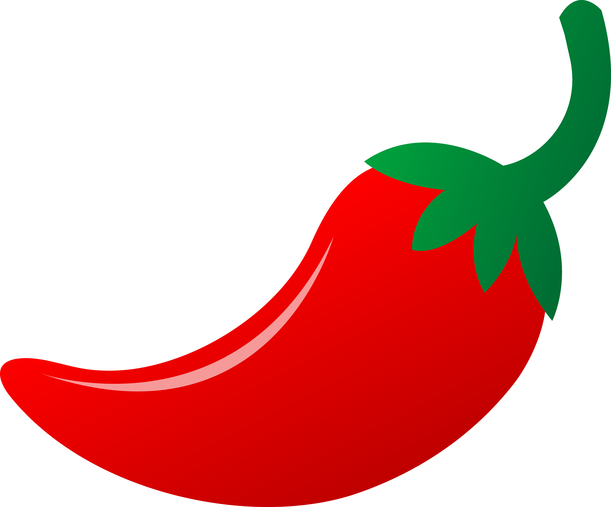
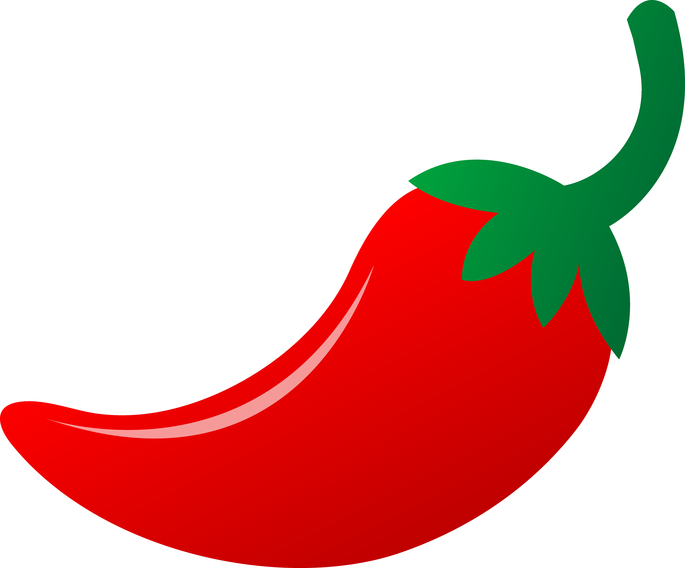
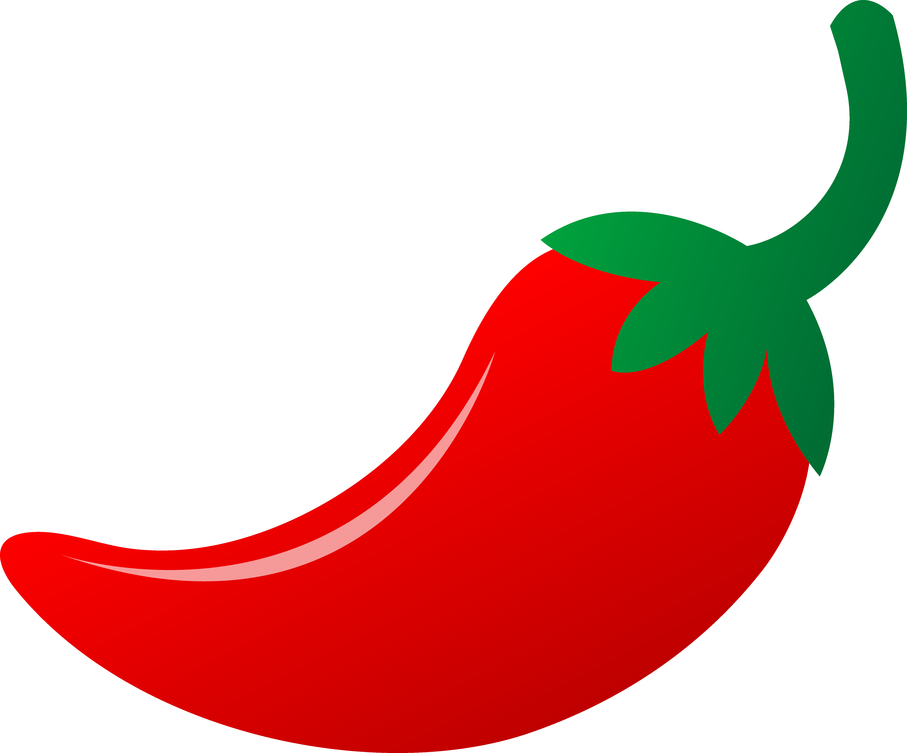
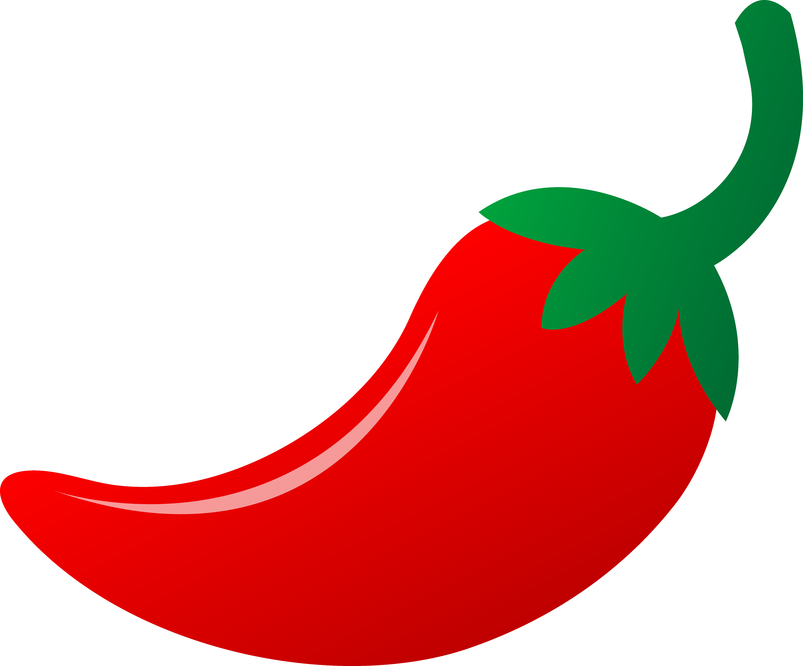

Welcome to Nachos Galore! Are you looking for something amazing to serve at a tailgate party? Maybe you are looking for something to just eat while relaxing on the couch. Well, you have come to the right place! Here you will find a variety of nachos recipes available at your disposal. For those who want to try out different kinds of dishes, you will never fail to find something new or interesting to make. If you are looking for the perfect snack for game day, a family occasion, a just for comfort, look no further than here!
The recipes are sorted into different categories for those who have a specific need. There are standard recipes which are comprised of fun dishes and spicy recipes for those who are brave enough to try them. Vegan and vegetarian dishes have also been added to accomodate those who want it as well. Bear in mind, the instructions for each recipe are not strict whatsoever, so you are welcome to improvise and add your own style to the cooking process as you wish.